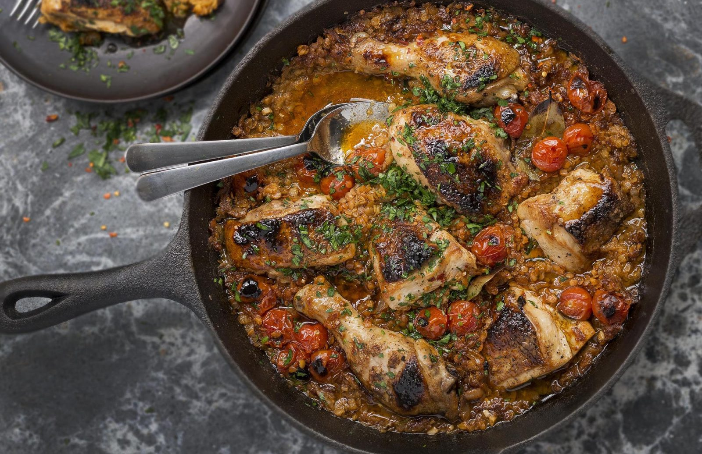
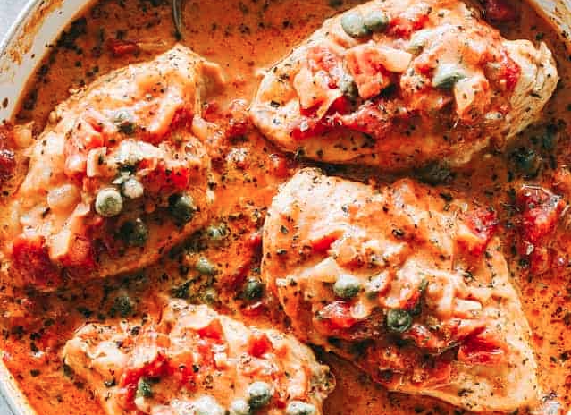
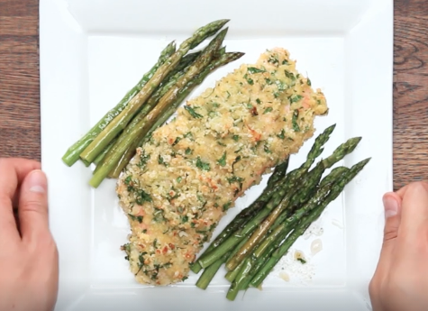
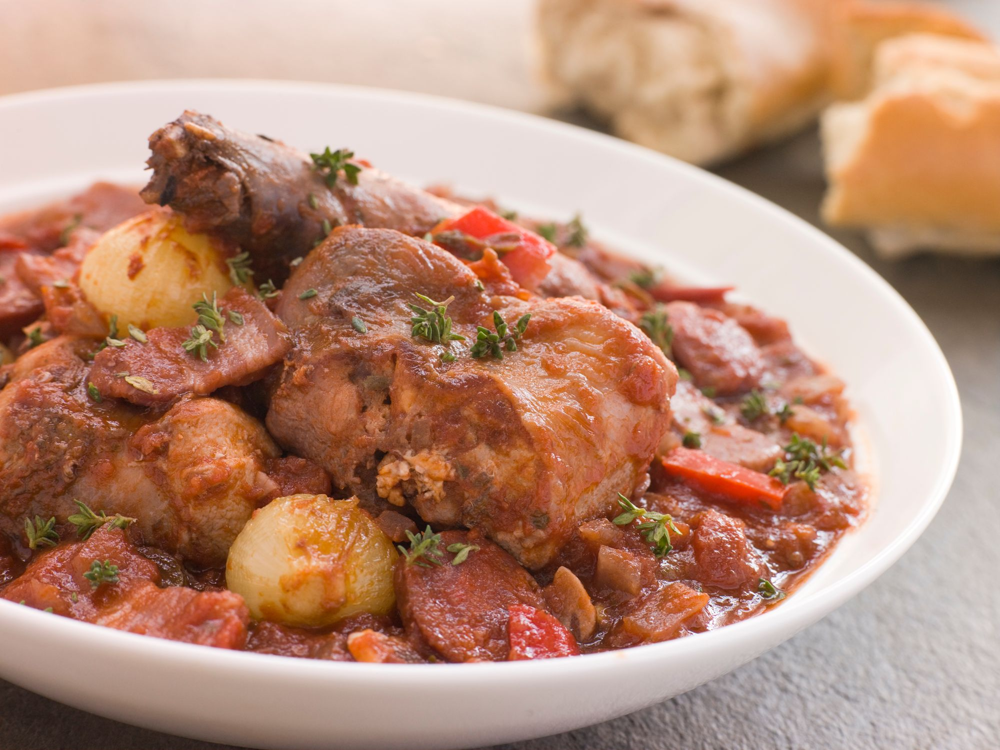

Caribbean Beef Chilli

Prep Time: 35mins. Serves: 2. Source: HelloFresh
Ingredients
- 1 carrot (unpeeled)
- 2 cloves of garlic
- 1 cup of basmati rice
- 2 cups of water
- 2 tbsp Jerk seasoning
- 500g beef mince
- 50g mango chutney
- 2 tbsp tomato paste
- 1 pinch of chilli flakes (optional)
- 1 cucumber
- 1 roma tomato
- 1 bunch of mint
- 1/2 lemon
Instructions
- Grate the carrot (unpeeled). Peel and crush the garlic. Slice the lemon into wedges, and juice until you have 2 tsp.
- While the rice is cooking, heat a drizzle of olive oil in a large frying pan over a medium-high heat. Add the beef mince and cook, breaking up with a wooden spoon, for 4-5 minutes, or until browned. Add the carrot, garlic, and jerk spice blend and cook for 1-2 minutes, or until fragrant.
- Add the mango chutney, tomato paste, 1 cup of water, 1 tsp of salt, and the chilli flakes (if using) to the pan with the beef mince. Mix well and simmer for 2 minutes, or until thickened.
- While the chilli is simmering, dice the cucumber and the Roma tomato. Roughly chop the mint leaves. In a medium bowl, combine the cucumber, tomato, mint, lemon juice and a drizzle of olive oil. Season to taste with a pinch of salt and pepper and stir to combine.
- Divide the coconut rice between bowls and top with the Caribbean beef chilli. Spoon over the cucumber-mint salsa.
Back to Recipes.
Smoky Chicken & Lentils

Prep Time: 40mins. Serves: 4-5. Source: Lentils.org
Ingredients
- 1 chicken cut into 8 pieces or equivalent in breasts and/or thighs, skin on.
- 1 medium brown onion, finely chopped
- 2 cloves of garlic, thinly sliced
- 1.5 tbsp smoked paprika
- 1 tbsp cumin
- 1 cup split red lentils, rinsed
- 1 cup whole cherry tomatoes
- 2 cups/500mL chicken stock
- 3 bay leaves
- 0.5 tsp chilli flakes
- Parsley to garnish, finely chopped
Instructions
- Preheat the oven to 200 celsius. Finely chop the onion. Slice the garlic. Rinse the lentils. Make the chicken stock.
- Pat both sides of chicken with paper towel to remove excess moisture, season generously on both sides with salt and pepper.
- In an ovenproof fry pan or cast iron pan, heat a splash of olive oil over a medium-high heat. Add the chicken to the pan and cook for 4-5 mins each side. Sear the chicken in batches or they will steam and not sear. Remove from the pan and set aside.
- Turn heat to medium, add onions, garlic, 1.5 tbsp smoked paprika, and 1 tbsp cumin. Stir for 3-5 mins. You won't be able to see it but the onions should go translucent but not browned.
- Turn off the heat. Add lentils, stock, tomatoes, bay leaves, chilli flakes, and chicken to the pan.
- Slide the pan into the oven and cook uncovered for 20-25 mins.
- Turn off oven and turn on broiler (grill) for 1-2 mins. This is the brown up the tomatoes. Remove from the oven & serve garnished with chopped parsley.
Back to Recipes.
Chicken & tomato with capers

Prep Time: 30mins. Serves: 4. Source: Diethood
Ingredients
- 2 tbsp olive oil
- 4 boneless chicken breasts
- 1 tsp dried basil
- salt and fresh ground pepper to taste
li>
1 tbsp butter
1 brown onion finely diced
2 tsp minced garlic
1/3 cup white wine vinegar
1 400g can of diced tomatoes
2 tbsp tomato paste
1 tsp dried oregano
another 1 tsp dried basil
1/3 cup cream
1/4 cup drained capers
1/4 cup chopped fresh parsley for garnish
Instructions
- Heat olive oil in a large skillet.
- Season chicken with dried basil, salt, and pepper.
- Add the chicken breasts to the skillet and cook over medium-high heat, 3 to 4 minutes per side, or until lightly browned.
- Remove chicken breasts from skillet; set aside.
- Add butter to the skillet and melt.
- Add diced onions and cook for 2 minutes.
- Stir in garlic and cook for 30 seconds.
- Stir in the wine to dissolve the brown pieces found at the bottom of the skillet; continue to cook for 4 minutes, or until reduced.
- Mix in the tomatoes, tomato paste, oregano, basil, half & half, and capers.
- Place chicken back in the skillet, bring to a boil; cover and simmer over medium-low heat for 8 minutes, or until chicken is cooked through.
- Remove from heat, garnish with parsley and serve.
Back to Recipes.
Parmesan Crusted Salmon

Prep Time: 30mins. Serves: 2. Source: Tasty.co
Ingredients
- 4 pieces of salmon, skin off
- 2 bunches of asparagus
- 1 egg
- 1/4 cup panko breadcrumbs
- 1/4 cup grated parmesan cheese
- 1 tbsp chopped parsley
- salt, pepper, olive oil
Instructions
- Grate the cheese, chop the parsley
- Preheat the oven to 200 celsius
- In a medium bowl, combine the breadcrumbs, parmesan, parsley, and salt to taste.
- In a separate bowl, whisk the egg. Dredge the salmon in the egg, then dip into the breadcrumb mix & cover completely.
- Lay the salmon on a baking sheet. Lay asparagus beside the salmon & drizzle with olive oil and season with salt & pepper.
- Bake for 10-12 minutes.
- Serve.
Back to Recipes.
Smoky Sausage Hotpot

Prep Time: 1hr. Serves: 4. Source: Good Pair Days
Ingredients
- 1 tsbp olive oil
- 1 chopped onion
- 1 crushed garlic clove
- 1 chopped celery stalk
- 2 green or red capsicums, chopped
- 6 pork sausages, left whole
- 1 tsp smoked paprika
- 1/2 tsp ground cumin
- 1/2 tsp chilli flakes
- 800g chopped tomatoes
- 250g spinach leaves
- 2 tsp breadcrumbs
- 1 tsp fresh thyme, to serve
- Crusty bread, to serve
Instructions
- Chop the onion. Crush the garlic. Chop the celery. Chop the capsicum.
- Heat the oil over a medium heat on the stove in an ovenproof dish. Add the onion and cook for 5 minutes.
- Add the garlic, capsicum, and celery, and cook for another 5 minutes.
- Turn up the heat to high, and add the sausages. Cook for a few minutes to brown all over.
- Stir in the smoked paprika, cumin, and chilli flakes, and salt and pepper.
- Add the tomatoes, bring to a simmer, and cook covered for 40 minutes, stirring regularly.
- Heat up the grill (broiler), and uncover the dish. Stir in the beans and spinach, then scatter over the breadcrumbs.
- Stick it under the grill for 3 minutes, then serve, with thyme and crusty bread.
Back to Recipes.